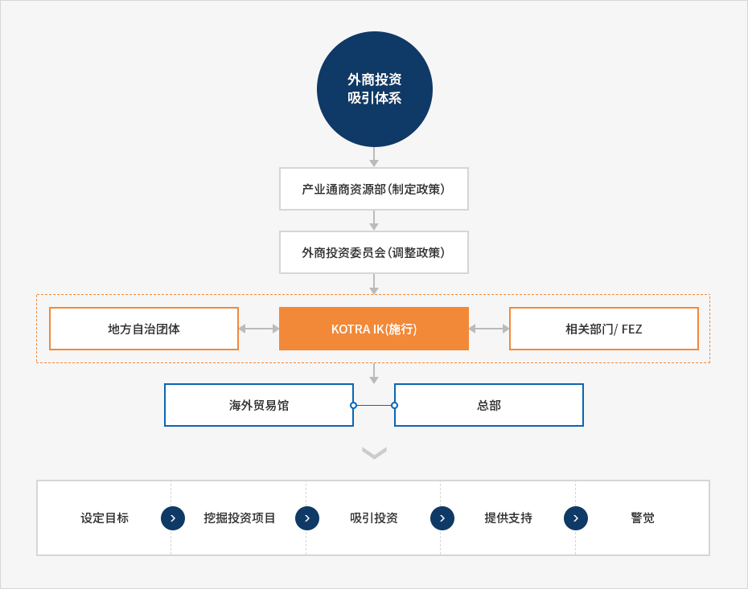

投资韩国（Invest Korea）
- Home
- IK服务
- IK简介
- 投资韩国（Invest Korea）
Invest KOREA
Invest KOREA是隶属于KOTRA（大韩贸易投资振兴公社）的国家招商引资机构，致力于帮助外国企业成功落户韩国。Invest KOREA负责对外宣传韩国投资环境，并面向外国企业提供从投资咨询、投资申报、企业设立、在韩经营支持到解决经营困难的综合服务。
韩国外商直接投资吸引体系
Invest KOREA由具有丰富外商投资知识和经验的KOTRA职员、专家集团、政府相关部门及机构外派公务员、各领域民间专家组成。此外，还与36家KOTRA海外投资据点贸易馆（Korea Business Center）建立紧密的业务合作关系。
Invest KOREA执行由韩国外商投资委员会（Foreign Investment Committee）和韩国产业通商资源部制定的外商投资政策。


外商投资吸引体系
- 产业通商资源部(制定政策)
- 外商投资委员会(调整政策)
- 地方自治团体 ↔ KOTRA IK(施行) ↔ 相关部门/ FEZ
- 海外贸易馆, 总部
-
- 设定目标
- 挖掘投资项目
- 吸引投资
- 提供支持
- 警觉

海外投资据点贸易馆
Invest KOREA为促进海外招商引资工作，设立了36家海外贸易馆和64名招商引资专员。海外投资据点贸易馆作为海外潜在投资者对接窗口，面向潜在投资者提供韩国投资信息，并筹办国家路演（IR）等招商引资活动。
发展沿革
-
2015
- 1月 - 外资企业困难处理团变更为监 察专员直接管辖的体系
-
2012
- 2月 - 作为监察专员直接管辖的组织，组成综合行政扶持中心
-
2010
- 8月 - 在Invest KOREA 增添研究工作职能
-
2009
- 被世界银行旗下的外商投资咨询机关 FIAS(Foreign Investment Advisory Service) 评选为招商引资网站优秀案例(在APEC国家中居第一)
-
2006
- 11月 - 建成外资企业创业扶持研究中心 — Invest KOREA Plaza
-
2003
- 12月 - 外商投资服务中心 → 成立Invest KOREA
-
1999
- 10月 - 设立外商投资监察专员办公室
-
1998
- 7月 - 在KOTRA 内部设立外商投资服务中心 (Korea Investment Service Center)
- 4月 - KOTRA 被指定为国家招商引资专责机构。
-
1995
- 8月 - KOTRA 增设外国人招商引资扶持职能